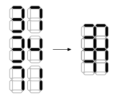

有一台数字打印机，它可以打印 $0 \sim 9$ 十个数字，标准的字体如下图：

现在要用这台打印机打印一个自然数竖式 $a + b = c$。为了方便，$a, b, c$ 的长度都是相同的，即每个数允许有前导零。
不幸的是，这台打印机的字符间距配错了，导致水平相邻的两个数字中，左边数字的右侧边和右边数字的左侧边重合了；更过分的是，竖直相邻的两个数字中，上方数字的下面 $4$ 条边和下方数字的上面 $4$ 条边都重合了。如下图：
当同一条边被打印一次或多次后，结果都是黑色的；否则是白色的。
现在给定打印的结果图，请寻找一个合适的竖式 $a + b = c$，使得它打印出来的结果和图片相符，或者说明这张图片不可能被打印出来。
第一行包含一个正整数 $w$ ($w \leq 100$)，表示竖式的宽度 (即每个数字的位数)。
接下来 $9$ 行，描述打印的结果图。(其中的) 奇数行包含 $w$ 个为 $0$ 或 $1$ 的数，描述水平边；偶数行包含 $w + 1$ 个为 $0$ 或 $1$ 的数，描述竖直边。其中 $1$ 表示该边为黑色，$0$ 表示该边为白色。
如果这张图片无法被打印出来，输出 NO。
否则，输出三行，每行一个 $w$ 位整数 (含前导 $0$)，表示 $a, b, c$。
如果有多组可能的解，输出任意一组均可。
考虑每一位，可知其有 $200$ 种情形 —— $a = 0, 1, \cdots, 9; b = 0, 1, \cdots, 9$，以及是否有进位。因此可以先预处理出这 $200$ 种 "单位状态" 的打印结果。
注意到所有的水平边只由这一位决定，因此根据水平边可以得到每一位可能是 $200$ 中情形的哪些情形。当然，两侧的竖直边也是有参考价值的，你需要保证该位的情形是对应边的子集。
那对于相邻两位数字共用的边，我们考虑使用数位 DP 处理。
用 $f_{i, j, carry}$ 表示考虑第 $\left( i, n \right]$ 已经处理完毕，且第 $i + 1$ 位的左侧边集合为 $j$，第 $i + 1$ 位提供的进位为 $carry$ 的情形是否可行。
边界为 $f_{n, \varnothing, 0} = \mathrm{true}$。考虑转移，根据第 $i + 1$ 位提供的进位枚举第 $i$ 位的 "单位状态"，再进一步通过 (第 $i + 1$ 位的左侧边集合) $j$ 筛选出所有合适的状态后即可转移到 $f_{i-1, j', carry'}$，其中 $j'$ 和 $carry'$ 为该 "单位状态" 的左侧边集合和进位，由 "单位状态" 本身所决定。
最后只需判定 $f_{0, L, 0}$ 是否为 $\mathrm{true}$，其中 $L$ 为原图最左侧边的集合。
要输出方案的话，就记录每个 $f_{i, j, carry}$ 可以由哪个状态转移得到，最终还原回去即可。
时间复杂度 $O \left( w \cdot 2^4 \cdot 10^2 \right)$ ($2^4$ 为枚举 $j$，$10^2$ 为枚举 "单位状态")，跑得飞快。
#include <bits/stdc++.h>
using std::cin;
using std::cout;
typedef std::pair <int, int> pr;
const int N = 108, M = N * 2;
const int dl[10] = {3, 0, 2, 0, 1, 1, 3, 0, 3, 1},
dm[10] = {5, 0, 7, 7, 2, 7, 7, 1, 7, 7},
dr[10] = {3, 3, 1, 3, 3, 2, 2, 3, 3, 3};
int n;
int hor[N], ver[N];
bool has_carry[M];
int left[M], mid[M], right[M];
pr f[N][16][2];
char ans[3][N];
inline void update(pr &x, const pr &y) {if (!~x.first) x = y;}
void init_digits() {
int i, j, k, carry, n = 0;
for (i = 0; i < 10; ++i)
for (j = 0; j < 10; ++j)
for (carry = 0; carry < 2; ++carry) {
k = i + j + carry;
if ((has_carry[n] = k >= 10)) k -= 10;
left[n] = dl[i] | dl[j] << 1 | dl[k] << 2,
mid[n] = dm[i] | dm[j] << 1 | dm[k] << 2,
right[n++] = dr[i] | dr[j] << 1 | dr[k] << 2;
}
assert(n == 200);
}
inline bool check(int pos, int id) {return hor[pos] == mid[id] && !(~ver[pos] & left[id]) && !(~ver[pos + 1] & right[id]);}
int main() {
int i, j, k, u, v, w, carry; char ch;
std::ios::sync_with_stdio(false), cin.tie(NULL);
init_digits(), cin >> n;
for (i = 0; ; ++i) {
for (j = 0; j < n; ++j) cin >> ch, hor[j] |= (ch & 1) << i;
if (i == 4) break;
for (j = 0; j <= n; ++j) cin >> ch, ver[j] |= (ch & 1) << i;
}
memset(f, -1, sizeof f), f[n][0][0] = pr(0, 0);
for (i = n; i; --i)
for (j = 0; j < 16; ++j)
for (carry = 0; carry < 2; ++carry) if (~f[i][j][carry].first)
for (k = carry; k < 200; k += 2) if (check(i - 1, k) && (j | right[k]) == ver[i])
update(f[i - 1][left[k]][has_carry[k]], pr(k, j));
if (!~f[0][*ver][0].first) return cout << "NO\n", 0;
j = *ver, carry = 0;
for (i = 0; i < n; ++i)
std::tie(k, j) = f[i][j][carry], carry = k & 1,
u = k / 20, v = k / 2 % 10, w = (u + v + carry) % 10,
ans[0][i] = u | 48, ans[1][i] = v | 48, ans[2][i] = w | 48;
ans[0][n] = ans[1][n] = ans[2][n] = 10;
cout << ans[0] << ans[1] << ans[2];
return 0;
}
坑1：在压缩 $200$ 个状态的时候注意顺序，不要写反了。
坑2：可以使用状态压缩来加速和减少代码量，但是注意水平边和竖直边的个数。